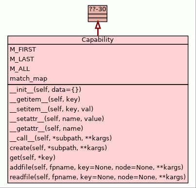

Package yapyutils ::
Package config ::
Module capabilities ::
Class Capability
Class Capability
source code

Provides JSON based read-only configuration of capabilities.
This in particular comprises the priority based readout
of values and defaults. The structure hereby includes
specialization by subcomponents, where the missing value
will be tried from the more general enclosing super
component.
The access to structured data trees offers various method to
access paths of nested node attributes. This comprises the
creation as well as the readout.
The following equivalent creation methods are supported, where
'treenode' could be either the root node, or any subordinated
branch:
treenode['subnode0']['subnode1']['subnode7'] = value # dynamic items
value = treenode(
'subnode0', 'subnode1', 'subnode7',
create=True,
) # dynamic items by '__call__'
value = treenode.subnode0.subnode1.subnode7 # static attribute addressing style
The following equivalent readout methods are supported, where
'treenode' could be either the root node, or any subordinated
branch:
value = treenode['subnode0']['subnode1']['subnode7'] # dynamic items
value = treenode('subnode0', 'subnode1', 'subnode7') # dynamic items by '__call__'
value = treenode.subnode0.subnode1.subnode7 # static attribute addressing style
|
|
M_FIRST = 1
|
|
|
M_LAST = 2
|
|
|
M_ALL = 3
|
- Args:
- data:
Configuration data:
data := (
<dict> # in-memory JSON structure
<file-path-name> # persistent JSON data
)
- Returns:
- None / initialized object
- Raises:
YapyUtilsCapabilityError
pass-through
- Decorators:
|
|
Gets the value of the path within the data.
- Args:
- key:
The value of the node within data:
key := (
<single-key>
| <list-of-keys>
| <tuple-of-keys>
)
- Returns:
- The value of the addressed node/value.
- Raises:
- pass-through
- Decorators:
|
__setitem__(self,
key,
val)
(Index assignment operator)
| source code
|
Sets the value of the path within the data.
- Args:
- key:
The value of the node within data:
key := (
<single-key>
| <list-of-keys>
| <tuple-of-keys>
)
- val:
The node/value to be set at the addressed path.
Non present values are created, present are
replaced.
- REMARK:
- In case of lists the value of the key for
a non-present value has to be the increment of
the highest present key. Sparse lists are not
supported.
- Returns:
- The value of the addressed node/value.
- Raises:
- pass-through
- Decorators:
|
|
Validates types of own data attributes.
- Args:
- name:
Name of the attribute. Following are reserved and
treated special:
- type: str - 'data'
The value is treated as the replacement of the internal
data attribute. Replaces or creates the complete data
of teh current instance.
- value:
- The value of the attribute. This by default superposes
present values by replacement. Non-present are created.
Returns:
- Raises:
- YapyUtilsCapabilityError
- Decorators:
|
__getattr__(self,
name)
(Qualification operator)
| source code
|
Args:
Returns:
Raises:
- Decorators:
|
__call__(self,
*subpath,
**kargs)
(Call operator)
| source code
|
Readout the value of a node, or an attribute. The name binding
of the path is provided as a tuple of path items.
- Args:
- subpath:
The list of keys constituting a branch of a data tree.
The subpath is treated as a branch of one of the nodes
of a provided searchpath - which is by default the top node.
The supported values are:
subpath := <list-of-node-ids>
<list-of-node-ids> := <node-id> [',' <list-of-node-ids>]
node-id := (
str # strings as keys - objects/dict only
| int # integers as index - lists only
| tuple | list # set as choice of valid literal path items
| <regexpr>
)
regexpr := <compiled-python-regular-expression>
compiled-python-regular-expression := re.compile(<regexpr>)
regexpr := "regular expression"
- kargs:
- searchpath:
Optional search path for the match of the provided
address subpath. The provided subpath is applied
to each node of the searchpath in accordance to the
direction option. This provides the search and
enumeration of side branches:
searchpath := <path-item-list>
path-item-list := <path-item> [, <path-item-list>]
path-item := (
str # item name
| int # item index
)
default := <top-node>
The search path entries has to be actually present by default.
These could be either created by loading a complete tree
structure, or by using the Capabilities.create() member.
See also parameter 'strict'.
- direction:
The search direction of the subpath within the
searchpath. In case of multiple superpositioned
attributes the first traversed match.
The provided values are:
direction := (
up | 0 | False # search from right-to-left
| down | 1 | True # search from left-to-right
)
default:= up
- match:
Sets the match criteria for the search operation.
Interferes with direction:
match := (
M_FIRST | 'first' # use first matching node
| M_LAST | 'last' # use last matching node
| M_ALL | 'all' # use all - iterate all matches
)
default := M_FIRST
- partial:
Enables the return of partial sub paths in case the requested
path is not completely present.
partial := (
True # when not completely present, the longest
# existing part is returned, the completeness
# is provided by the result attribute <partial>
| False # when not completely present an exception
# is raised
)
- strict:
Controls the required consistency. This comprises:
- the presence of the search path entries
- the presence of the requested subpath within the set
of search paths
- Returns:
In case of a match returns the tuple:
return := (<attr-value-path>, <attr-value>, <partial>)
attr-value-path := (
"the list of keys of the top-down path"
| "empty list when no item exists" # see <complete>
)
attr-value := "value of the targeted node/attribute"
partial := (
False # the complete requested path
| True # the actually present part of the path
)
Else raises YapyUtilsCapabilityOidError.
- Raises:
YapyUtilsCapabilityOidError
pass-through
- Decorators:
|
|
Creates a subpath to a given node, default is from top.
- Args:
- subpath:
The list of keys constituting a branch of a data tree.
The subpath is treated as a branch of one of the nodes
of a provided searchpath - which is by default the top node.
The supported values are:
subpath := <list-of-node-ids>
<list-of-node-ids> := <node-id> [',' <list-of-node-ids>]
node-id := (
str # strings as keys - objects/dict only
| int # integers as index - lists only
| tuple | list # set as choice of valid literal path items
| <regexpr>
)
regexpr := <compiled-python-regular-expression>
compiled-python-regular-expression := re.compile(<regexpr>)
regexpr := "regular expression"
- kargs:
- hook:
Optional node as parent of the insertion point for the new sub path.
The node must exist.
hook := (
)
search path for the match of the provided
address subpath. The provided subpath is applied
to each node of the searchpath in accordance to the
direction option.
Default := <top-node>
- create:
Create missing entities of the requested path.
The provided value is the value of the final node:
create := <value-of-node>
value-of-node := <valid-json-node-type>
valid-json-node-type := (
int | float
| str # unicode
| dict | list
| None | True | False # equivalent: null|true|false
)
default := None
- direction:
The search direction of the subpath within the
searchpath. In case of multiple superpositioning
attributes the first match of traversion.
The provided values are:
direction := (
up | 0 | False # search from right-to-left
| down | 1 | True # search from left-to-right
)
Default:= up
- match:
Sets the match criteria for the search operation.
Interferes with direction:
match := (
M_FIRST # use first matching node
| M_LAST # use last matching node
| M_ALL # use all - iterate all matches
)
default :=
- Returns:
In case of a match returns the tuple:
return := (<attr-value-path>, <attr-value>)
attr-value-path := "the list of keys of the top-down path"
attr-value := "value in accordance to the type of the attribute"
Else raises YapyUtilsCapabilityOidError.
- Raises:
YapyUtilsCapabilityOidError
pass-through
- Decorators:
|
|
Gets a value from data.
Args:
Returns:
Raises:
- Decorators:
|
addfile(self,
fpname,
key=None,
node=None,
**kargs)
| source code
|
Superposes a configuration file to the existing entries. Updates and
creates granular items. The a applied traversing algorithm is:
1. create non-existing branches and leafs
2. replace existing leafs
3. traverse existing leafs for new branches and existing leafs
- Args:
- fpname:
- see readfile()
- key:
- see readfile()
- node:
- see readfile()
- kargs:
- path:
- see readfile()
- striproot:
- see readfile()
- suffixes:
- see readfile()
- Returns:
- Reference to updated data structure.
- Raises:
YapyUtilsConfigError
pass-through
- Decorators:
|
readfile(self,
fpname,
key=None,
node=None,
**kargs)
| source code
|
Reads a JSON file. This is a simple basic method for the application
on the lower layers of the software stack. It is designed for minimal
dependencies. The used standard libraries support the syntaxes:
INI, JSON, .properties, XML, YAML
The data is by not validated. If this is required external higher layer
tools such as multiconf could be applied.
The readfile() simply replaces existing configuration data, for the
iterative update see addfile().
- Args:
- fpname:
File path name of the configuration file. Alternate relative names
could be provided, where optionally additional parameters are used
for search and file suffixes, see other parameters:
<path>/<fpname>[<suffix>]
- key:
The key for the insertion point:
node[key] = <file-data>
default := None - replace self.data,
The caller is responsible for the containment of the provided
node within the data structure represented by this object. No
checks are performed.
- node:
The node for the insertion of the read data.:
default := <top>
- kargs:
- nodata:
Prohibit insertion to self.data, returns the data reference only.
default := False
- path:
Alternate list of search paths:
path := <list-of-search-paths>
list-of-search-paths := <spath> [, <list-of-search-paths>]
spath := "path-prefix"
- striproot:
- A special option for XML files. When True suppresses the mandatory
named root node of XML. Thus provides a similar result as JSON for
better merge and internal processing. Other parsers simply ignore this
option.
- suffixes:
Suffixes as preferences for configuration file type:
suffixes := '[' <list-of-preferences> ']'
list-of-preferences := <pref> [, <list-of-preferences>]
pref := ( # the order defines the search and usage priority
'yaml'
| 'json'
| 'xml'
| 'inix'
| 'ini'
| 'cfg'
| 'properties'
)
- Returns:
- Reference to read data structure.
- Raises:
YapyUtilsConfigError
pass-through
- Decorators:
|
match_map
- Value:
{M_FIRST: 1, M_LAST: 2, M_ALL: 3, 'first': 1, 'last': 2, 'all': 3,}
|
|